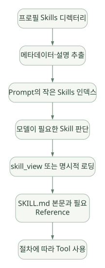

SECOND STUDY / Memory·검색·Skills
Memory·검색·Skills
이번 단원의 읽는 관점
파일 기록과 현재 프롬프트 반영 시점을 나누고, FTS5 검색과 Skill의 점진적 로딩을 연결합니다.
살펴볼 경계Memory Frozen Snapshot, 원본 DB와 검색 인덱스, Skill 생성과 신뢰성 검증을 구분하세요.
이 페이지의 세부 목차
10. Skills: 절차적 기억은 어떻게 발견·생성·재사용되는가?#
10.1 Skill의 본질: 저장된 행동 절차#
Skill은 모델 가중치가 학습된 결과가 아니라, 필요한 상황에 꺼내 읽을 수 있도록 만든 작업 설명 문서 및 관련 파일이다. Memory가 작은 사실과 선호를 다루는 반면, Skill은 '어떤 Tool을 어떤 순서로 호출하고 어떤 실패를 피해야 하는가'라는 절차적 지식을 제공한다.
~/.hermes/skills/
example-skill/
SKILL.md
references/
guide.md
scripts/
utility.pySKILL.md에는 이름·설명·사용 시점·수행 절차·주의사항 등을 기술하고, 필요한 경우 references에 보조 문서를 둔다. 다른 Skills 플랫폼과 달리 Hermes 고유 Tool인 skill_manage가 이를 직접 수정할 수 있다. [DOC]
문서: https://hermes-agent.nousresearch.com/docs/user-guide/features/skills
10.2 점진적 로딩이 왜 중요한가?#
Agent가 Skill 500개를 설치했다고 그 500개 전문을 모두 매 요청에 넣으면 Token과 Attention Budget이 빠르게 소진된다. 대신 다음처럼 설계한다.
가로로 이동해서 읽을 수 있습니다. 도식 크게 보기 ↗

원문의 학습용 도식입니다. 연결 방향·분기 조건·점선·쌍방향 연결을 보존해 세로로 배치했습니다. 실제 구현·의사코드·해석의 구분은 본문을 함께 읽으세요.
도식 원문 보기 (Mermaid)
flowchart TD
A[프로필 Skills 디렉터리] --> B[메타데이터·설명 추출]
B --> C[Prompt의 작은 Skills 인덱스]
C --> D[모델이 필요한 Skill 판단]
D --> E[skill_view 또는 명시적 로딩]
E --> F[SKILL.md 본문과 필요 Reference]
F --> G[절차에 따라 Tool 사용]실제 Hermes에는 사용자에 의한 명시적 선택, 초기 Auto-load, 작업 중 모델의 skill_view 선택, Cron에 Skill 첨부 등 여러 경로가 있다. '무조건 모델이 매번 의미 검색으로 Skill을 고른다'라는 단일 메커니즘으로 설명하면 부정확하다.
[SRC] agent/prompt_builder.py는 Skill 인덱싱과 필터에 필요한 agent/skill_utils.py의 함수를 가져오며, Platform/환경 조건을 검사할 수 있다. Skill Directory가 있다고 모든 Skill이 현재 모델에 무조건 노출되는 것은 아니다.
코드: https://github.com/NousResearch/hermes-agent/blob/v0.22.5/agent/prompt_builder.py
10.3 Skill 자동 생성은 정확히 어떤 동작인가?#
- 모델이 작업의 반복 가능성·오류 해결 방법을 인식한다.
- System Guidance 또는 다른 지침을 근거로
skill_manage를 호출한다. - Tool Handler가 파일 생성·수정 요청의 인자와 위치를 검증한다.
- 활성화된 Content Scanner/Write Approval Gate를 거친다.
- 승인된 변경이
SKILL.md또는 Reference 파일로 반영된다. - 다음 요청에서 Skill 인덱스에 노출되거나 Skill Body가 로드되어 재사용된다.
[DOC] 시스템 지침이 Agent에게 비사소한 반복 작업·사용자 수정·실패 후 해결 절차 등을 기록하도록 유도한다. Skill Write Approval을 켜면 생성/수정/삭제를 바로 적용하지 않고 Pending 상태로 보관해 Diff를 검토할 수 있다. Content Scanner와 승인 Gate는 서로 다른 기능이다.
# 설정 예시: 자동 생성된 Skill을 검토한 뒤 반영
skills:
write_approval: true검토용 CLI 예시(문서상 명령):
/skills pending
/skills diff <id>
/skills approve <id>
/skills reject <id>10.4 핵심 로직을 지나치게 신비화하지 말 것#
Hermes가 '스스로 Skill을 만든다'는 설명은 LLM이 재사용 가치가 있다고 판단하고, 파일 쓰기 Tool을 호출하여 문서를 저장한다는 것이다. 별도 학습된 독립 Policy Network가 최적 Skill을 통계적으로 증명한다는 뜻은 아니다.
또한 공식 문서는 Skill Write에 적용되는 Advisory Linter를 설명한다. 일부 구조상 문제를 경고하지만 성능·정확성을 보증하거나 모든 위험한 내용을 차단하지는 않는다. Skill Content Scanner도 패턴 탐지 중심이므로 보안 검증을 완전히 대신할 수 없다.
10.5 Skill 자동 생성의 실패 모드#
| 문제 | 발생 원리 | 방어 설계 |
|---|---|---|
| 잘못된 절차 고착 | 모델의 한 번의 시행착오를 일반 규칙으로 저장 | 승인, 검증된 예제, 버전 이력 |
| 상황을 넘는 일반화 | 특정 환경에서만 맞는 방법을 모든 상황에 사용 | Preconditions, 적용 범위·버전 명시 |
| 오래된 Tool API | Tool 스키마나 서버가 변경됨 | Compatibility Test, Deprecation |
| 민감한 데이터 저장 | Tool Output을 Skill 본문에 복사 | DLP, Secret Scanner, 경로 ACL |
| Skill 중복 증식 | 비슷한 Skill을 반복 생성 | Curator, Merge, 품질 점수 |
| 잘못된 지침 주입 | 외부 Skill에 악의적 명령 포함 | 출처 검증, Diff 승인, 실행 격리 |
| Context 오염 | 지나치게 긴 Skill 로딩 | Index/Body 분리, 요약·부분 로딩 |
10.6 왜 '반도체 공정 상황에서는 오히려 안 좋을 수 있나?'#
이번 문서에서는 데모 구현을 제외하지만 설계적 함의는 검토한다.
작업 지침이 정확성·추적성·변경 승인과 결부된 산업 업무에서, 모델이 만든 절차를 곧바로 권위 있는 규칙처럼 재사용하면 잘못된 공정 조건·데이터 필터·계산법이 전파될 수 있다. 따라서 Skill을 공식 SOP의 대체물로 만들기보다, 승인된 SOP를 찾고 인용하고 검증하는 워크플로의 안내로 사용하도록 설계하는 편이 적절하다. [INF]
추가 설계 규칙:
scope,owner,approved_by,reviewed_at,source_document_version,expiry를 Skill 메타데이터에 별도 관리.- Skill 본문은 절차·주의·근거 위치를 적고, 실제 운영 수치/안전 조건은 검증된 별도 시스템을 조회.
- 신규·수정 Skill은 Human Review와 비실행 기반 Static Check를 거쳐야 함.
- Skill이 자동 생성되더라도 자동 실행 권한까지 승격되지는 않도록 구분.
이 메타데이터 예시는 권장 아키텍처이고 Hermes의 기본 스키마에 같은 필드가 전부 존재한다는 뜻은 아니다.